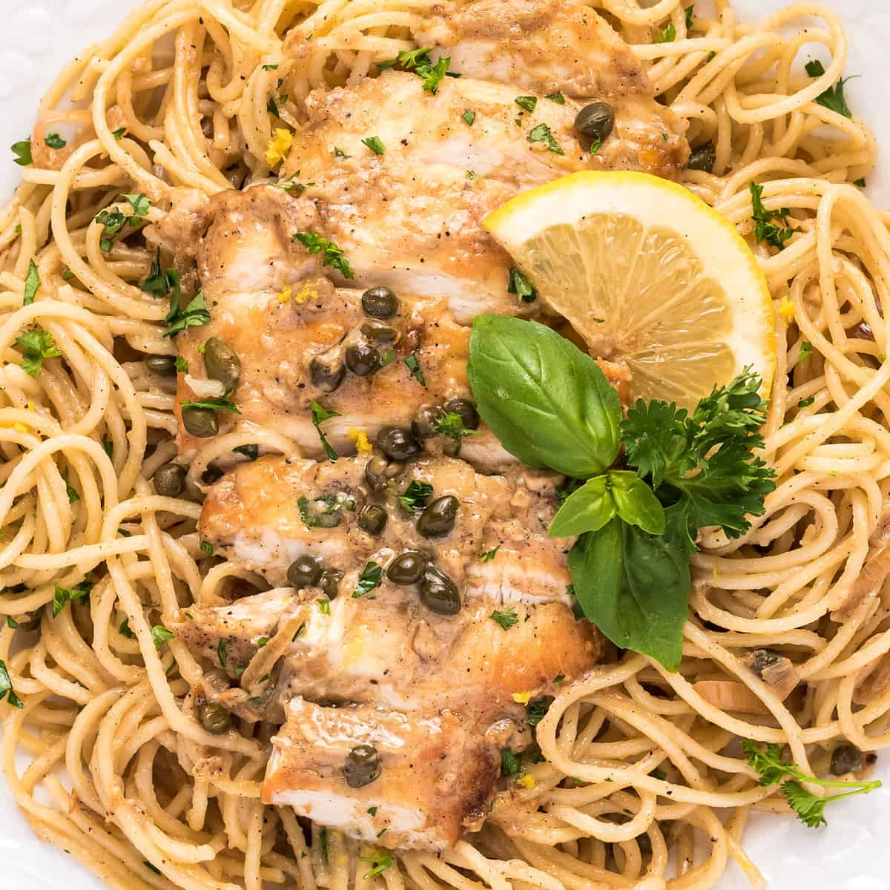

The Chikky Pikky

The Buttery Chicken Pasta
Oh mane. Do you want to score some brownie pts for date night?? This is
THE DISH
for you. Easy to prep and easy to make.
Ingredients
- 8oz -Sauvignon Blanc(Rodney Strong is the go to, no I am not sponsored its just delish)
- 2 x skinless boneless chicken breasts
- All-purpose flour
- 6 x tbs unsalted butter
- 5 x tbs EVOO
- 1/3 cup of lemon juice
- 1/2 cup of chicken stock
- 1/3 cup of capers, drained
- angel hair pasta
- fresh parsley for garnish
Steps
- Take chicken breasts and butterfly them. Super easy. Lay it flat and cut in half length wise..
this will make it cook faster vs a thick chicken piece
- Dredge those bad bois in your flour(just coat them in flour lol)
- Get you pan to medium high heat and melt 2 tbs of butter and add 3 tbs
of olive oil. Let them begin to sizzle.
- Add the chicken normally two pieces fit at a time and cook pieces for 3 mins. Flip and cook for
3 more minutes, then transfer them to plate. Repeat for all of your chicken.
- Add capers and lemon juice to your used pan. Scrape up those browned bits for flavor
- Boil water in salted pot and cook pasta al dente
- Return chicken to pan and simmer on low heat for 5 mins
- Add 2 tbs of butter and whisk sauce.
- Plate pasta add chicken to top and pour sauce over chicken.
Garnish with chopped parsley
Back to the Recipes